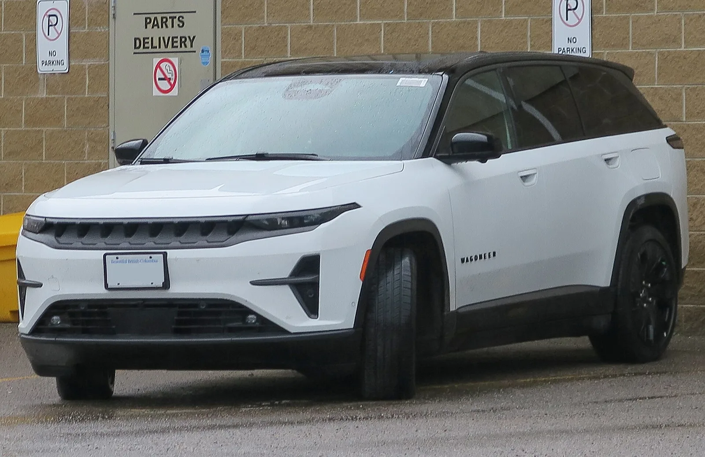
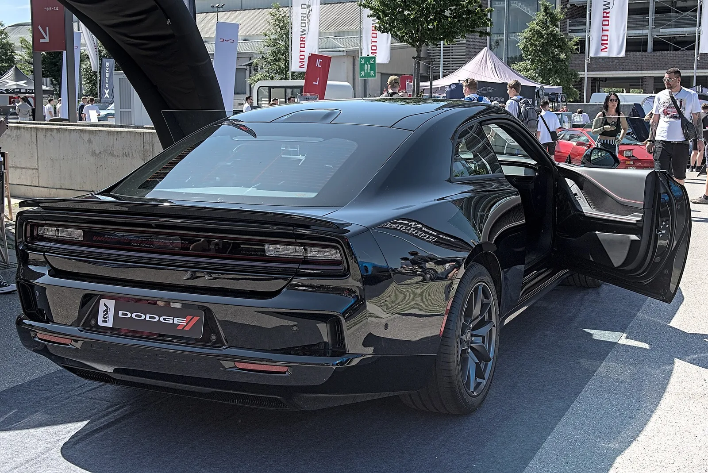
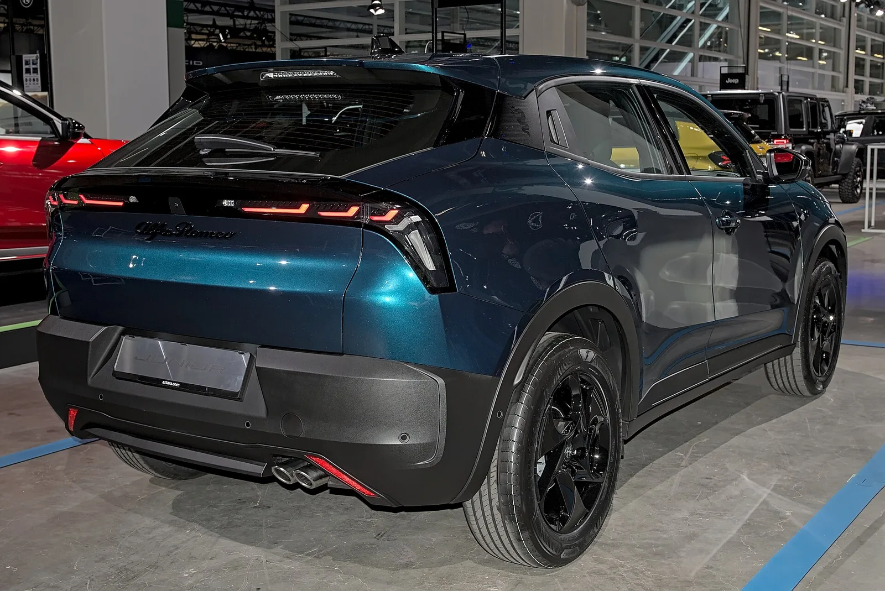

▲ 지프 왜고니어 S는 연방 세액공제 종료 이후 판매가 급감해 2026년형 생산을 건너뛰게 됐다 ⓒ Wikimedia Commons
"우리는 에너지 전환의 속도를 과대평가한 대가를 치렀다." 스텔란티스 안토니오 필로사(Antonio Filosa) CEO가 2025년 실적 발표에서 내놓은 이 한 문장은, 2026년 9월 10일 뉴욕에서 열린 Jefferies Global Industrials Conference 2026 무대에서 더 구체적인 전략으로 이어졌다.
오후 1시 30분부터 35분간 진행된 기조 대담에서 필로사 CEO는 "전기 파워트레인을 여러 브랜드가 공용으로 쓸 수 있도록 개발하겠다"고 밝히며, 지프·크라이슬러·푸조·시트로엥·마세라티·알파로메오 등 14개 브랜드를 거느린 스텔란티스가 더 이상 특정 시점까지 전기차 비중을 강제로 끌어올리는 방식을 쓰지 않겠다고 못박았다. 배경에는 2025년 순손실 223억 유로(약 263억 달러)와, EV 전략을 되돌리며 발생한 약 254억 유로(약 300억 달러) 규모의 손상차손이 있다.
1. Jefferies 컨퍼런스에서 나온 발언 — "고객이 선택하게 하겠다"
이번 발언이 나온 자리는 실적 발표가 아니라 투자은행이 주최하는 산업 콘퍼런스였다는 점이 눈에 띈다. 뉴욕에서 열린 Jefferies Global Industrials Conference 2026에서 필로사 CEO는 애널리스트와의 기조 대담 형식으로 회사의 회복 계획을 설명했다. 그는 "올해 5월 발표한 'FaSTLAne 2030' 계획"을 언급하며, 600억 유로 규모의 투자, 60종의 신차, 2030년 조정영업이익(AOI) 마진 8~10%라는 세 가지 숫자를 다시 확인시켰다. 즉 이 수치들은 Jefferies 컨퍼런스에서 처음 공개된 것이 아니라, 2026년 5월 캐피털마켓데이에서 발표된 기존 5개년 계획의 진행 상황을 재확인한 것이다. 투자액의 상당 부분은 STLA One 플랫폼과 STLA Brain 소프트웨어, 공용 전기 파워트레인 등 여러 브랜드가 함께 쓰는 '횡단 자산'에 들어간다고 설명했다.
| 항목 | 목표 |
|---|---|
| 투자 규모 | 5개년 600억 유로 |
| 신차 계획 | 60종 신모델 출시 |
| 수익성 목표 | 2030년 AOI(조정영업이익) 마진 8~10% |
| 현금흐름 목표 | 2027년 잉여현금흐름(FCF) 흑자 전환, 2028년 FCF 30억 유로 |
| 파워트레인 전략 | 내연기관·마일드하이브리드·플러그인하이브리드·전기를 모델별로 병행 제공 |
📍 "전기차를 강요하지 않겠다"
필로사 CEO가 강조한 표현은 고객의 '선택할 자유'였다. 스텔란티스는 콘퍼런스 이후 공식 자료에서도 "내연기관, 하이브리드, 완전 전기 등 모든 기술 범위 중에서 고객이 자유롭게 선택할 수 있도록 사업을 재구성하는 비용"이라는 표현으로 2025년의 대규모 손실을 설명했다. 특정 연도까지 전기차 비중을 강제로 맞추는 대신, 시장별·모델별 수요에 맞춰 파워트레인을 유연하게 배치하겠다는 것이다.
Jefferies 컨퍼런스 발언 전문에 가까운 내용은 아래 스텔란티스 공식 미디어 어드바이저리에서 확인할 수 있다. 스텔란티스 공식 발표 바로가기
2. 263억 달러 손실의 실체 — 왜 이 정도 규모였나
스텔란티스는 2026년 2월 26일 2025 회계연도 전체 실적을 발표하며, 2021년 피아트크라이슬러(FCA)와 PSA그룹 합병으로 출범한 이래 첫 연간 적자를 기록했다고 밝혔다. 연간 순손실은 223억 유로, 달러 환산으로 약 263억 달러에 달했다. 매출은 1535억 유로로 전년 대비 2% 감소했는데, 환율 역풍과 상반기 가격 하락이 주된 원인으로 지목됐다.
✅ 254억 유로(약 300억 달러) 손상차손의 구성
· 2026년 2월 6일 사전 발표분: 2025년 하반기 실적에 반영된 222억 유로 — 전기차 제품 계획·공급망을 수요에 맞춰 재조정하는 과정에서 발생
· 연간 합계: 254억 유로 — 나머지는 상반기분과 기타 항목
· 포함 항목: 계약상 품질보증 충당금 산정 방식 변경, 유럽 인력 구조조정 관련 비용 등
· 회사 설명: "에너지 전환 속도를 과대평가한 대가이자, 고객이 내연·하이브리드·전기 전 범위에서 자유롭게 선택하도록 사업을 재편하는 비용"
이 손실은 전임 카를로스 타바레스 체제에서 세운 목표, 즉 2030년까지 유럽 신차 판매의 100%를 전기차로, 미국 신차 판매의 50%를 전기차로 채운다는 계획을 실행하기 위해 쏟아부은 투자를 되돌리는 과정에서 발생했다. 배터리 생산능력 계약, 전용 전기차 플랫폼, 신규 EV 모델 개발비 등이 수요 둔화로 조기 상각·재평가 대상이 된 것이다.

▲ 닷지의 전기 머슬카 차저 데이토나는 동급 가솔린 모델보다 판매가 크게 뒤처지며 EV 목표 재조정의 상징적 사례가 됐다 ⓒ Wikimedia Commons
3. 지프부터 마세라티까지 — 브랜드별로 갈리는 후폭풍
필로사 CEO의 전략 전환은 스텔란티스 산하 14개 브랜드에 각기 다른 방식으로 영향을 주고 있다. 특히 EV 비중이 높았던 브랜드일수록 되돌리는 폭도 컸다.
📍 지프 — 왜고니어 S, 2026년형 생산 건너뛴다
지프의 첫 전용 전기 SUV인 왜고니어 S는 2026년형 생산을 아예 건너뛴다. 연방 EV 세액공제가 2025년 말 종료된 이후 판매가 급감했기 때문이다. 2025년 1분기 2595대였던 판매량이 2026년 1분기에는 175대로 93% 급감했고, 2025년 10월부터 2026년 3월까지 6개월간 누적 판매도 613대에 그쳤다. 지프는 충전 성능·배터리·소프트웨어를 개선한 뒤 2027년형으로 복귀시킨다는 계획이다. 대신 그랜드체로키·랭글러·글래디에이터는 2027년 완전 리프레시, 2028년에는 오프로드 라인업 신공세가 예정돼 있다.

▲ 알파로메오는 소형 SUV 주니어에서 전기(Elettrica)와 하이브리드(Ibrida) 버전을 함께 파는 방식으로 이미 멀티에너지 전략을 시험하고 있다 ⓒ Wikimedia Commons
📍 알파로메오 — 줄리아·스텔비오, EV 전용 계획 철회
알파로메오는 차세대 줄리아와 스텔비오를 EV 전용으로 내놓겠다는 기존 계획을 뒤집었다. 알파로메오 대표 산토 피칠리(Santo Ficili)는 내연기관·플러그인하이브리드·순수전기를 모두 포함하는 유연한 파워트레인 전략으로 방향을 바꿨다고 밝혔다. 원래 2026년 출시가 점쳐졌던 신형 스텔비오는 여러 차례 일정이 밀리며 2028년 무렵으로 늦춰질 전망이다. 반면 이미 판매 중인 소형 SUV 주니어는 전기(Elettrica)와 하이브리드(Ibrida) 버전을 함께 운영하며 멀티에너지 전략의 선행 사례 역할을 하고 있다.
📍 마세라티 — 카시노 공장 셧다운, 신형 EV 지연
마세라티와 알파로메오의 상당수 모델을 생산하는 이탈리아 카시노(Cassino) 공장은 'EV 전용' 베팅이 실패로 돌아가며 가동이 중단됐다. 그란투리스모·그레칼레 등을 완전 전기로 전환하려던 계획도 지연되면서, 마세라티는 그레칼레의 경우 하이브리드(Modena·GT 트림의 마일드하이브리드) 라인업 비중을 당분간 더 크게 유지할 것으로 보인다.

▲ 마세라티 그레칼레는 완전 전기화 대신 마일드하이브리드 '모데나' 등급 비중을 당분간 유지할 것으로 보인다 ⓒ Wikimedia Commons
✅ 그 밖의 브랜드 동향
· 램(Ram)·닷지 — 램 1500과 그랜드 왜고니어에 배터리+주행거리 연장용 소형 엔진을 함께 쓰는 '레인지 익스텐더(EREV)' 버전 도입 추진. 2026년 1분기 미국 판매 기준 닷지 차저 데이토나 EV는 240대에 그친 반면 가솔린 '식스팩' 모델은 1672대가 팔려 약 7대 1로 밀렸고, 데이토나 EV 판매량 자체도 2025년 1분기 1947대에서 88% 급감함
· 푸조·시트로엥(유럽) — 유럽 시장은 2026년 들어 품질 지표가 전년 대비 24% 개선됐다고 밝혔으나, 소형차 전용 플랫폼(STLA Small) 개발 지연으로 일부 신차 출시 일정에 영향이 있다는 보도가 나옴
· 크라이슬러 — 2027년 말~2028년 초 최소 2개 신모델 출시 예정, 파워트레인 구성은 공개되지 않음
4. 스텔란티스만의 일이 아니다 — 포드·GM·혼다의 '속도조절'
전기차 목표를 되돌리는 흐름은 스텔란티스에 국한되지 않는다. 2025~2026년 사이 포드·GM·혼다를 포함한 완성차 업체들이 잇따라 EV 투자 속도를 늦추거나 하이브리드로 방향을 틀었다.
| 업체 | 주요 조치 |
|---|---|
| 스텔란티스 | 2025년 254억 유로(약 300억 달러) 손상차손, 2030년 유럽 100%·미국 50% EV 목표 철회 |
| 포드 | 2025년 12월 3열 전기 SUV·차세대 전기 픽업 계획 취소, 신형 '유니버설 EV 플랫폼(UEV)'과 하이브리드 라인업 확대로 전환 — 총 195억 달러 손실 반영(대부분 2025년 4분기~2026년 반영, 55억 달러는 2027년으로 이월) |
| GM | 2025년 10월 EV 투자 축소 관련 16억 달러 charge 인식, 이어 4분기에 자산 손상 등 60억 달러를 추가 반영해 연간 합계 약 76억 달러 규모의 EV 관련 charge 발생 — 차세대 대형 전기 픽업트럭 출시는 2026년 4월 무기한 연기 발표 |
| 혼다 | 2030년까지 전동화·소프트웨어 투자 30% 삭감(약 207억 달러 규모 축소), 절감분을 신형 하이브리드 모델 출시 가속에 재투입 |
📍 최소 18개 업체가 미국에서 EV 계획을 축소·연기·취소
포드·혼다·닛산·폭스바겐 등을 포함해 최소 18개 완성차 업체가 미국 시장에서 EV 프로젝트를 취소·지연·축소한 것으로 집계된다. 수요 둔화와 보조금 축소가 동시에 겹치면서, 업계 전반이 수익성이 검증된 하이브리드를 앞세운 '멀티 파워트레인' 전략으로 재정비하는 모습이다.
포드·GM·혼다 등 업계 전반의 EV 속도조절 흐름을 다룬 해외 보도는 아래에서 확인할 수 있다. Automotive Logistics 관련 기사 바로가기
5. 앞으로 남은 과제 — 손실을 만회할 수 있을까
필로사 CEO가 제시한 회복 시나리오는 결국 '숫자로 증명하는 일'만 남았다. 그는 Jefferies 컨퍼런스에서 회사가 이미 개선 조짐을 보이고 있다고 언급하면서도, 투자자들이 더 빠른 결과를 원한다는 점과 턴어라운드에 시간이 걸린다는 점을 동시에 인정했다.
✅ 향후 확인해야 할 지표
· 2027년 잉여현금흐름(FCF) 흑자 전환 여부 — 필로사 CEO가 스스로 공언한 첫 번째 이정표
· 2028년 FCF 30억 유로 달성 여부
· 북미 실적 — 매출 27%, 이익 10% 증가라는 불균형이 이후 어떻게 좁혀지는지
· 지프 왜고니어 S 2027년형 복귀 이후 판매 반등 여부 — EV 수요 자체가 회복되고 있는지를 가늠할 지표
· 중국 리프모터(Leapmotor)와의 합작 — 스텔란티스 51%·리프모터 49% 지분 구조의 저가 EV 유통 전략이 유럽·신흥시장에서 성과를 낼지 여부
6. 요약
스텔란티스 안토니오 필로사 CEO는 2026년 9월 10일 Jefferies Global Industrials Conference에서, 전임 경영진이 세웠던 2030년 유럽 100%·미국 50% 전기차 목표를 사실상 철회하고 내연·하이브리드·전기를 함께 파는 멀티에너지 전략으로 전환한다고 밝혔다. 배경에는 2025년 순손실 223억 유로(약 263억 달러)와 EV 전략 되돌리기 과정에서 발생한 254억 유로(약 300억 달러) 규모의 손상차손이 있다.
이 여파는 지프 왜고니어 S의 2026년형 생산 중단, 알파로메오 줄리아·스텔비오의 EV 전용 계획 철회, 마세라티 카시노 공장 셧다운 등 브랜드별로 다르게 나타나고 있다. 포드·GM·혼다 등 경쟁사들도 비슷한 시기에 EV 투자를 되돌리며 하이브리드 중심 전략으로 방향을 틀고 있어, 이번 발언은 스텔란티스 한 회사만의 문제가 아니라 업계 전반의 흐름을 보여주는 사례로 읽힌다.
관건은 2027년 잉여현금흐름 흑자 전환 등 필로사 CEO가 제시한 재무 목표를 실제로 달성할 수 있는지다. 전기차 목표를 낮춘 것이 손실을 멈추는 데 도움이 될지, 아니면 전환의 시점을 늦추는 데 그칠지는 앞으로 몇 분기의 실적으로 판가름 날 전망이다.